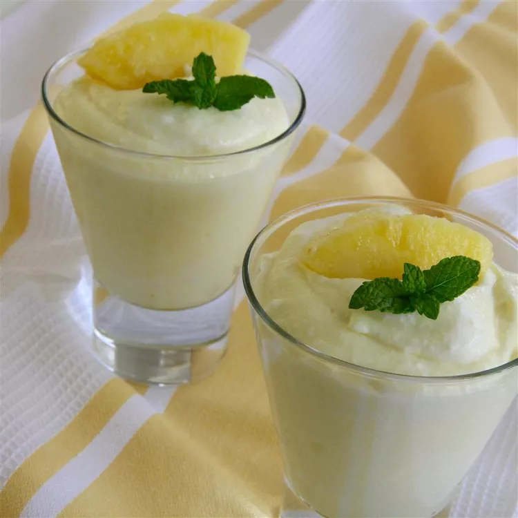

Cottage Cheese Fluff

Description:
Low-fat cottage cheese is mixed with Cool Whip Lite® and dry sugar-free gelatin to create a delightful dessert. You can use any flavor Jell-O; I prefer lemon or orange.
Ingredients:
- 3 cups low-fat cottage cheese
- 2 (0.3 ounce) packages sugar-free lemon flavored Jell-O® mix
- 1 (8 ounce) container lite frozen whipped topping, thawed
Steps:
- Gather the ingredients.
- Place the cottage cheese in a food processor and blend until creamy.
- Whisk in the flavored gelatin powder, then fold in the thawed whipped topping. Refrigerate until serving.
Home